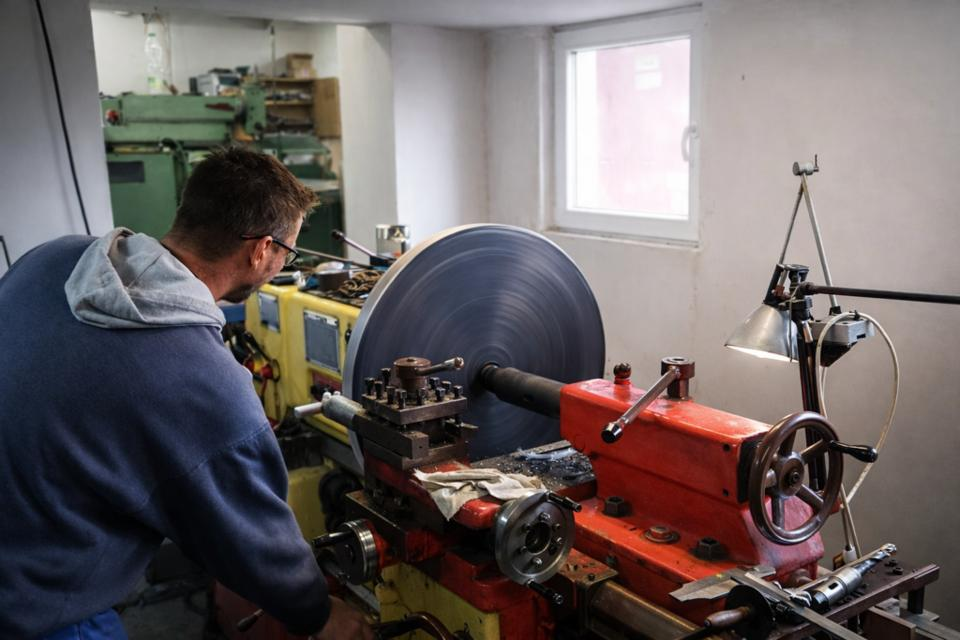
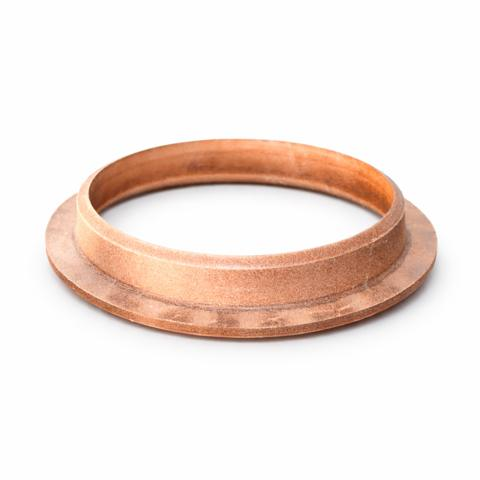
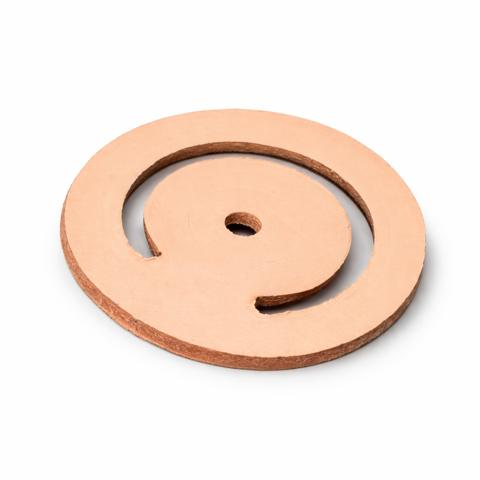
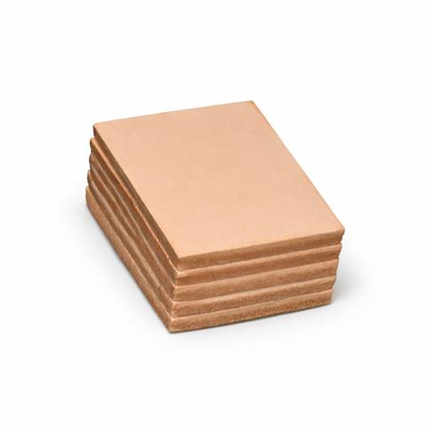
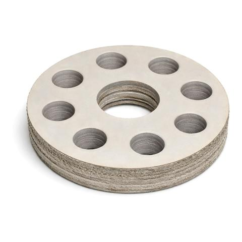
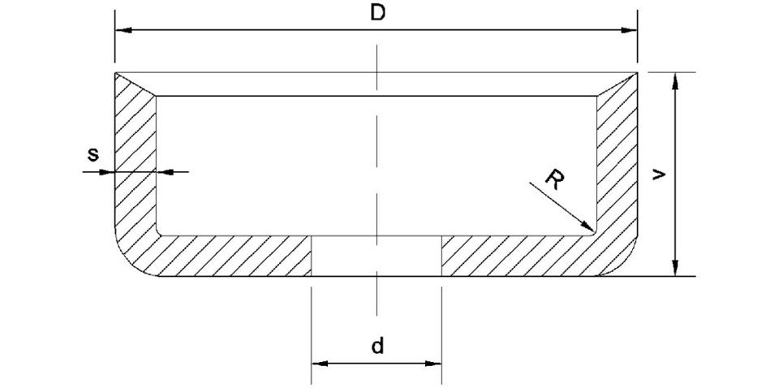

Z naší dílny v Petrovicích
Formy na manžety vyrobíme na jakýkoli rozměr, který potřebujete, až do průměru 800 mm.
Na fotografiích soustruh s kotoučem pro formu velkého průměru a hotové miskové manžety.



Výrobky z usně
Manžety vyrábíme z kvalitní technické hovězí usně podle norem ČSN 02 9262 až 02 9267. Kromě manžet děláme výseky z usně: těsnění, špalíky, válečky a hardyspojky.

Miskové manžety M
ČSN 02 9267 · od ⌀ 10 mm
Střechové manžety V
ČSN 02 9263 · V-profil, obvykle vícevrstvé · od ⌀ 28 mm

Dvojité manžety U
ČSN 02 9262 · od ⌀ 24 mm

Kloboučkové manžety K
ČSN 02 9266 · od ⌀ 24 mm

Zpětné klapky
Kožené, bez přítěže

Lepené špalíky a válečky
Lepené z usně

Hardyspojky a těsnění
Výseky z usně
Kožené manžety podle norem ČSN
| Norma | Typ manžety | Konstrukce | Typické použití |
|---|---|---|---|
| ČSN 02 9262 | U (dvojitá) | U-profil, dvojitá konstrukce | Těsnění pístnic a pohyblivých částí hydraulických a pneumatických zařízení |
| ČSN 02 9263 | V (střechová) | V-profil, často ve vícevrstvé sestavě | Těsnění pístů a pístnic hydraulických válců a lisů |
| ČSN 02 9266 | K (kloboučková) | Kloboučkový tvar | Těsnění pístů nebo pístnic v hydraulických zařízeních |
| ČSN 02 9267 | M (misková) | Jednoduchá misková manžeta | Těsnění pístů a pístnic v hydraulických a kapalinových systémech |
Technická hovězí useň
Manžety z technické hovězí usně se hodí do hydraulických lisů, čerpadel a průmyslových strojů. Používají se také při renovaci starších zařízení.
Po vytvarování useň impregnujeme voskem nebo parafínem. Impregnace zlepšuje těsnicí vlastnosti a chrání useň před vysycháním a opotřebením.
- Vysoká pevnost a odolnost proti opotřebení
- Přizpůsobí se povrchu válce
- Spolehlivě těsní při nízkém i středním tlaku
- Při správné impregnaci dlouho vydrží



Poptávka manžet
Vyberte typ, napište průměr a počet kusů. Otevře se Vám e-mail s připravenou poptávkou, ke kterému můžete přiložit výkres.
Manžety vyrábíme do průměru 800 mm.
- Telefon
- +420 603 373 420
pan Jakub Lukosz - lumir@lumir.cz
- Adresa
- Petrovice u Karviné 259
735 72 Petrovice u Karviné - Provozní doba
- Po–Pá 6:00–15:00
So–Ne zavřeno